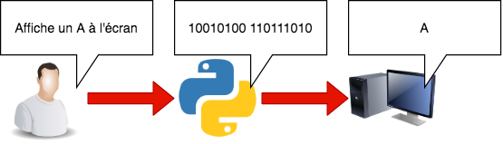
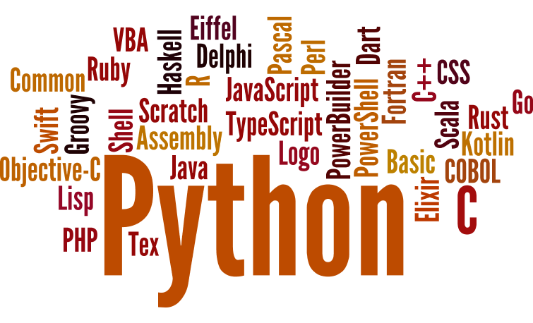

Très simplement, si vous arrivez à comprendre ces suites de symboles étranges et déconcertants que sont les lettres de l'alphabet, c'est parce que nous respectons certaines conventions, dans le langage et dans l'écriture. En français, il y a des règles de grammaire et d'orthographe, je ne vous apprends rien. Vous communiquez en connaissant plus ou moins consciemment ces règles et en les appliquant plus ou moins bien, selon les cas.
Cependant, ces règles peuvent être aisément contournées : personne ne peut prétendre connaître l'ensemble des règles de la grammaire et de l'orthographe françaises, et peu de gens s'en soucient. Après tout, même si vous faites des fautes, les personnes avec qui vous communiquez pourront facilement vous comprendre. Quand on communique avec un ordinateur, cependant, c'est très différent.
Mais bon, vous pouvez vous en douter, parler avec l'ordinateur en langage machine, qui ne comprend que le binaire, ce n'est ni très enrichissant, ni très pratique, et en tous cas pas très marrant. On a donc inventé des langages de programmation pour faciliter la communication avec l'ordinateur.
Les langages de programmation sont des langages bien plus faciles à comprendre pour nous. Le mécanisme reste le même, mais le langage est bien plus compréhensible. Au lieu d'écrire les instructions dans une suite assez peu intelligible de 0 et de 1, les ordres donnés à l'ordinateur sont écrits dans un « langage », souvent en anglais, avec une syntaxe particulière qu'il est nécessaire de respecter. Mais avant que l'ordinateur puisse comprendre ce langage, celui-ci doit être traduit en langage machine

Crée en 1989 par le hollandais Guido van Rossum
Python est :

Python est un langage de programmation, compréhensible par l'homme et interprété en langage machine.